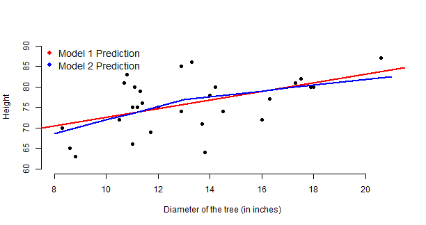

Woudn't it be a good idea to control the tree height?
- Be it to use the timber to make furniture
- Be it to do a tree farm landscaping
- Be it to utilise some farming automation
(Francis) Chao He
Software Developer
We've got a data set called 'trees'. It provides measurements of the girth, height and volume of timber in 31 felled black cherry trees. Note that girth is the diameter of the tree (in inches) measured at 4 ft 6 in above the ground. (from: http://stat.ethz.ch/R-manual/R-devel/library/datasets/html/trees.html)

